Budget 2018
For a vignette from the Budget 2018 analysis, see: https://hughparsonage.github.io/grattan/articles/long-vignettes/budget-2018.html
This vignette collates the vignettes that were present before version 1.5.3.
Bracket creep
library(mgcv)
#> Loading required package: nlme
#> This is mgcv 1.8-24. For overview type 'help("mgcv-package")'.
library(lattice)
library(dtplyr)
library(dplyr)
#>
#> Attaching package: 'dplyr'
#> The following object is masked from 'package:nlme':
#>
#> collapse
#> The following objects are masked from 'package:stats':
#>
#> filter, lag
#> The following objects are masked from 'package:base':
#>
#> intersect, setdiff, setequal, union
library(ggplot2)
library(scales)
library(magrittr)
library(ggrepel)
library(viridis)
#> Loading required package: viridisLite
#>
#> Attaching package: 'viridis'
#> The following object is masked from 'package:scales':
#>
#> viridis_pal
library(knitr)
library(hutils)
#>
#> Attaching package: 'hutils'
#> The following objects are masked from 'package:dplyr':
#>
#> coalesce, if_else
library(magrittr)
library(data.table)
#>
#> Attaching package: 'data.table'
#> The following objects are masked from 'package:dplyr':
#>
#> between, first, lasttemplib <- tempfile()
hutils::provide.dir(templib)if (requireNamespace("taxstats1516", quietly = TRUE) &&
requireNamespace("taxstats", quietly = TRUE)) {
library(taxstats)
library(taxstats1516)
} else {
install.packages("https://raw.githubusercontent.com/hughparsonage/tax-drat/master/src/contrib/taxstats_0.0.5.1415.tar.gz",
dependencies = FALSE,
quiet = TRUE,
lib = templib,
verbose = FALSE,
repos = NULL)
library("taxstats",
lib.loc = templib,
verbose = TRUE,
character.only = TRUE)
}sample_files_all <-
rbindlist(lapply(list(`2003-04` = sample_file_0304,
`2004-05` = sample_file_0405,
`2005-06` = sample_file_0506,
`2006-07` = sample_file_0607,
`2007-08` = sample_file_0708,
`2008-09` = sample_file_0809,
`2009-10` = sample_file_0910,
`2010-11` = sample_file_1011,
`2011-12` = sample_file_1112,
`2012-13` = sample_file_1213,
`2013-14` = sample_file_1314),
data.table::as.data.table),
use.names = TRUE,
fill = TRUE,
idcol = "fy.year")
sample_files_all[, WEIGHT := hutils::if_else(fy.year > '2010-11', 50L, 100L)]
age_range_decoder <- as.data.table(age_range_decoder)library(grattan)
#> Last change: NAMESPACE at 2018-08-14 12:16:30 (3 hours ago).Introduction
This vignette uses a recent op-ed to demonstrate several tools within the grattan package:
- projection of sample files for analysis over the budget forward estimates, including a flexible assumption about future wage growth
- calculating income tax, both under present settings and changes to thresholds or rates.
Average change of tax rates by decile
Say we want to compare the expected income tax paid by individuals in 2016-17 vs 2020-21. We have 2% sample files from 2012-13 and 2013-14. To do distributional analysis for years beyond 2013-14, we project a sample file as many years ahead as required. So for 2016-17, we use project with h = 4L. (The h stands for ‘’horizon’‘. The L means ’integer’ in R: project insists that the h value is strictly an integer as that is the only type of value that makes sense here.)
sample_file_1617 <-
project(sample_file_1213,
h = 4L,
fy.year.of.sample.file = "2012-13")and similarly for 2020-21 we use h = 8L:
sample_file_2021 <-
project(sample_file_1213,
h = 8L,
fy.year.of.sample.file = "2012-13")I use fy.year.of.sample.file = "2012-13" rather than = "2013-14" as the former seems to give more accurate forecasts when compared with final budget outcomes in the years that follow.
The next step is to calculate the tax paid for each entry in the sample file for those years. The grattan package provides income_tax for this purpose, with the optional argument .dots.ATO accepting a sample file to take care of the variables that are needed for the complex calculations of offsets and the Medicare levy. The argument fy.year specifies what tax scales to use; for future years, we assume the current settings, unless the Government has announced changes in a future year, such as the expected increase to the Medicare levy. Since the income_tax function only currently works for years as far ahead as 2019-20, we use that year for the 2020-21 projection of the sample file.
sample_file_1617[, tax_paid := income_tax(Taxable_Income,
.dots.ATO = copy(sample_file_1617),
fy.year = "2016-17")]
sample_file_1617[, avg_tax := tax_paid / Taxable_Income]
sample_file_2021[, tax_paid := income_tax(Taxable_Income,
.dots.ATO = copy(sample_file_2021),
fy.year = "2019-20")]
sample_file_2021[, avg_tax := tax_paid / Taxable_Income]To calculate the average (average) tax by decile, we use weighted_ntile with the optional arguments weights left to the default (as the sample file is equiweighted).
avg_tax_by_decile_1617 <-
sample_file_1617 %>%
.[, .(avg_tax = mean(avg_tax)),
keyby = .(decile = weighted_ntile(Taxable_Income, n = 10))]
avg_tax_by_decile_2021 <-
sample_file_2021 %>%
.[, .(avg_tax = mean(avg_tax)),
keyby = .(decile = weighted_ntile(Taxable_Income, n = 10))]We can then plot a comparison of these table by joining them and using ggplot2. Since the tables are already keyed by decile, we can use the X[Y] method from data.table to join by decile. This creates a three-column table: the first is decile, the second is avg_tax which is the avg_tax from the 2016-17 table and i.avg_tax which is the avg_tax from the 2020-21 table. (In the result of X[Y], any column in Y which has the same name as a column in X (but isn’t a key) is prefixed with i. to distinguish it.) We discard the lowest decile as the average tax is NaN for those with zero taxable income. Lastly, for cosmetic reasons, we convert decile to a factor so that the labels on the chart are 1, 2, 3, ... rather than 0, 2.5, 5, ....
avg_tax_by_decile_1617[avg_tax_by_decile_2021] %>%
.[decile > 1] %>%
.[, ppt_increase := 100*(i.avg_tax - avg_tax)] %>%
.[, decile := factor(decile)] %>%
ggplot(aes(x = decile, y = ppt_increase)) +
geom_col()
This chart and the underlying data are a reflection of the assumptions in the project function. In particular, the project function uses a particular forecast of the wage price index to uprate the salary column in the sample file. This differs from the assumptions in the 2017 Budget.
Budget_wage_series <-
data.table(fy_year = c("2017-18", "2018-19", "2019-20", "2020-21"),
r = c(0.025, 0.03, 0.035, 0.0375))
kable(Budget_wage_series)| fy_year | r |
|---|---|
| 2017-18 | 0.0250 |
| 2018-19 | 0.0300 |
| 2019-20 | 0.0350 |
| 2020-21 | 0.0375 |
The project function expects wages to grow by 7.97% over the period 2016-17 to 2020-21, whereas by the forecast in the Budget this number would be 13.4%. Whatever the merits of each forecast, the project function allows you to specify a particular wage series in the future through the argument wage.series =. We can then repeat the analysis above using those estimates:
sample_file_1617 <- project(sample_file_1213,
h = 4L,
fy.year.of.sample.file = "2012-13")
sample_file_2021 <- project(sample_file_1213,
fy.year.of.sample.file = "2012-13",
h = 8L,
wage.series = Budget_wage_series)
sample_file_1617[, tax_paid := income_tax(Taxable_Income,
.dots.ATO = copy(sample_file_1617),
fy.year = "2016-17")]
sample_file_1617[, avg_tax := tax_paid / Taxable_Income]
sample_file_2021[, tax_paid := income_tax(Taxable_Income,
.dots.ATO = copy(sample_file_2021),
fy.year = "2019-20")]
sample_file_2021[, avg_tax := tax_paid / Taxable_Income]
avg_tax_by_decile_1617 <-
sample_file_1617 %>%
.[, .(avg_tax = mean(avg_tax)),
keyby = .(decile = weighted_ntile(Taxable_Income, n = 10))]
avg_tax_by_decile_2021 <-
sample_file_2021 %>%
.[, .(avg_tax = mean(avg_tax)),
keyby = .(decile = weighted_ntile(Taxable_Income, n = 10))]
difference_2021_Budget <-
avg_tax_by_decile_1617[avg_tax_by_decile_2021] %>%
.[decile > 1] %>%
.[, ppt_increase := 100*(i.avg_tax - avg_tax)]
difference_2021_Budget %>%
copy %>%
.[, decile := factor(decile)] %>%
ggplot(aes(x = decile, y = ppt_increase)) +
geom_col()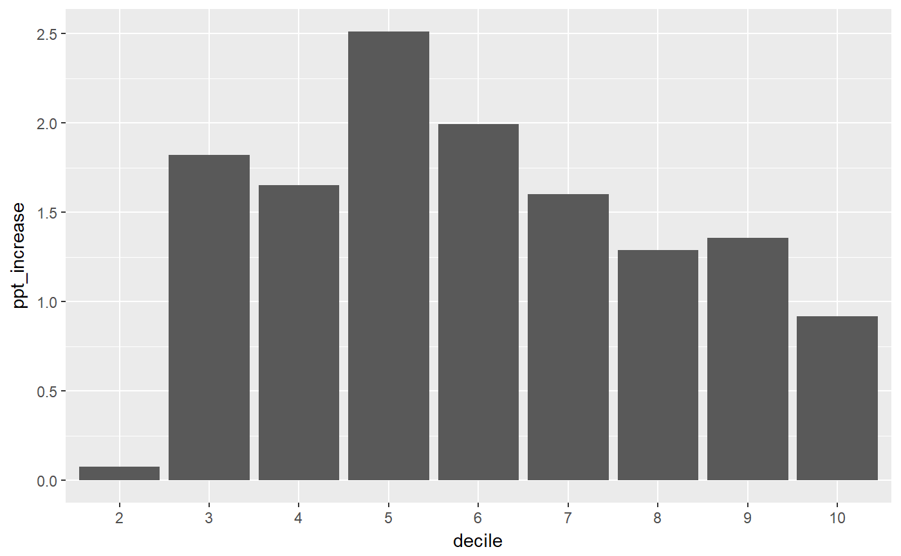
Through some intermediate calculations, we can obtain the sentence that was used in the op-ed:
middle_income_avg_inc <-
difference_2021_Budget %>%
.[decile %between% c(3, 7)] %$%
range(round(ppt_increase, 1))sample_file_1617[, percentile := weighted_ntile(Taxable_Income, n = 100)]
stopifnot(56 %in% sample_file_1617[Taxable_Income %between% c(49500, 50500)][["percentile"]])
avg_tax_rate_2017_50k <-
sample_file_1617[percentile == 56] %$%
mean(avg_tax) %>%
round(3)
avg_tax_rate_2021_50k <-
sample_file_2021 %>%
.[, percentile := weighted_ntile(Taxable_Income, n = 100)] %>%
.[percentile == 56] %$%
mean(avg_tax) %>%
round(3)Middle-income earners are particularly hurt by bracket creep. Based on the wages growth projected in the 2016 budget, the average tax rates for people in middle-income groups will increase by between 1.6 and 2.5 percentage points by 2021. For example, a person earning $50,000 a year will go from paying an average tax rate of 17.2 per cent in 2017 to 19.2 per cent in 2021.
Income tax with changes to rates
We can also use the package to estimate the revenue difference under changes to the marginal tax rates. The following function accepts two arguments: the bracket number to modified, and a rate increase to that bracket. The function returns the change in revenue (as a loss).
tax_delta <- function(bracket_number, rate_increase = -0.01) {
current_tax <-
sample_file_2021[, .(tax = sum(tax_paid),
WEIGHT = WEIGHT[1])] %$%
sum(tax * WEIGHT)
orig_rates <- c(0, 0.19, 0.325, 0.37, 0.45)
new_rates <- orig_rates
new_rates[bracket_number] <- new_rates[bracket_number] + rate_increase
# rebate_income is an internal function
.ri <- grattan:::rebate_income
new_tax <-
sample_file_2021 %>%
copy %>%
.[, base_tax. := IncomeTax(Taxable_Income,
thresholds = c(0, 18200, 37000, 87000, 180e3),
rates = new_rates)] %>%
.[, medicare_levy. := medicare_levy(income = Taxable_Income, fy.year = "2019-20",
Spouse_income = Spouse_adjusted_taxable_inc,
sapto.eligible = (age_range <= 1),
family_status = if_else(Spouse_adjusted_taxable_inc > 0, "family", "individual"))] %>%
.[, lito. := lito(Taxable_Income, max_lito = 445, lito_taper = 0.015, min_bracket = 37000)] %>%
.[, rebate_income := .ri(Taxable_Income,
Rptbl_Empr_spr_cont_amt = Rptbl_Empr_spr_cont_amt,
Net_fincl_invstmt_lss_amt = Net_fincl_invstmt_lss_amt,
Net_rent_amt = Net_rent_amt,
Rep_frng_ben_amt = Rep_frng_ben_amt)] %>%
.[, sapto. := sapto(rebate_income, fy.year = "2019-20", sapto.eligible = (age_range <= 1))] %>%
.[, tax_payable := pmaxC(base_tax. - lito. - sapto., 0) + medicare_levy.] %>%
.[, .(tax = sum(tax_payable),
WEIGHT = WEIGHT[1])] %$%
sum(tax * WEIGHT)
current_tax - new_tax
}which leads to the sentence and table in the op-ed:
For example, if the government was to reduce the tax rate only in the middle (37,000-87,000) bracket from 32.5% to 30%, the promised $7.8 billion surplus in 2021 would all but be swallowed up by the 6.8 bn revenue loss.
data.table(tax_bracket = c("<18,200",
"18,200-37,000",
"37,000-87,000",
"87,000-180,000",
"180,000+"),
budget_impact = c(NA, round(vapply(2:5, tax_delta, FUN.VALUE = double(1)) / 1e9, 2))) %>%
kable| tax_bracket | budget_impact |
|---|---|
| <18,200 | NA |
| 18,200-37,000 | 1.21 |
| 37,000-87,000 | 2.24 |
| 87,000-180,000 | 0.79 |
| 180,000+ | 0.40 |
Companion to the 2013-14 sample file
Prologue
This vignette is a mirror of a small book prepared internally by Grattan Institute. The goal is to demonstrate how to perform simple analysis and create common charts. You will need the taxstats package available via devtools::install_github('hughparsonage/taxstats').
options("scipen" = 99)
opts_chunk$set(fig.width = 9,
fig.height = 6.5,
warn = FALSE)FY.YEAR <- "2013-14"wsum <- function(x, w = 1){
sum((x) * w)
}grattan_dollar <- function (x, digits = 0) {
#
nsmall <- digits
commaz <- format(abs(x), nsmall = nsmall, trim = TRUE, big.mark = ",",
scientific = FALSE, digits = 1L)
if_else(x < 0,
paste0("\U2212","$", commaz),
paste0("$", commaz))
}sample_file <- sample_files_all[fy.year == FY.YEAR]
sample_file <- merge(sample_file, age_range_decoder, by = "age_range")
PREV.FY.YEAR <- yr2fy(fy2yr(FY.YEAR) - 1)
sample_file_prev <- sample_files_all[fy.year == PREV.FY.YEAR]
sample_file_prev <- merge(sample_file_prev, age_range_decoder, by = "age_range")set.seed(48031)
sample_file %<>%
group_by(age_range_description) %>%
mutate(min_age = if_else(grepl("to", age_range_description),
as.numeric(gsub("^([0-9]{2}).*$", "\\1", age_range_description)),
if_else(grepl("70", age_range_description),
70,
15)),
max_age = min_age + 5,
age_imp = runif(n(), min_age, max_age)) %>%
select(-min_age, -max_age)
#> Warning in if_else(grepl("to", age_range_description),
#> as.numeric(gsub("^([0-9]{2}).*$", : NAs introduced by coercionsample_file %<>%
mutate(Tax_Bracket = cut(Taxable_Income,
breaks = c(-Inf, 18200, 37e3, 80e3, 180e3, Inf),
include.lowest = TRUE,
labels = c("$0-$18,200",
"$18,201-$37,000",
"37,001-$80,000",
"$80,001-$180,000",
"$180,000+")))texNum <- function(number, sig.figs = 3L, dollar = FALSE, pre.phrase = NULL, .suffix = NULL){
orig.number <- number
stopifnot(is.numeric(number), length(number) == 1L)
is.negative <- number < 0
number <- abs(number)
if (number == 0){
warning("Returning 0")
return(0)
} else {
if (is.null(.suffix)){
n.digits <- ceiling(log10(number))
suffix <- NULL
suffix_val <- 1
if (n.digits < sig.figs){
prefix <- signif(x = number, digits = sig.figs)
} else {
if (n.digits <= 6) {
prefix_val <- round(number, sig.figs - n.digits - 1)
prefix <- prettyNum(prefix_val, big.mark = ",", scientific = FALSE)
} else {
# Want to show only the number / 10^(multiple of 3) then the suffix multiplier
suffix_val <- 10 ^ (3 * ((n.digits %/% 3)))
prefix_val <- signif(number/suffix_val, digits = sig.figs)
prefix <- prefix_val
if (suffix_val <= 10^12){
switch(log10(suffix_val) / 3 - 1,
suffix <- "~million",
suffix <- "~billion",
suffix <- "~trillion")
} else {
prefix <- signif(number / 10^12, digits = sig.figs)
suffix <- "~trillion"
}
}
}
} else {
stopifnot(.suffix %in% c("million", "billion", "trillion"))
switch(.suffix,
"million" = {
prefix <- signif(number / 10^6, digits = sig.figs)
suffix <- "~million"
suffix_val <- 10^6
},
"billion" = {
prefix <- signif(number / 10^9, digits = sig.figs)
suffix <- "~billion"
suffix_val <- 10^9
},
"trillion" = {
prefix <- signif(number / 10^12, digits = sig.figs)
suffix <- "~trillion"
suffix_val <- 10^12
})
prefix_val <- prefix
}
if (dollar){
out <- paste0("\\$", prefix, suffix)
} else {
out <- paste0(prefix, suffix)
}
if (is.negative){
# General LaTeX
out <- paste0("\\(-\\)", out)
}
# is the displayed number larger than the original?
if (!is.null(pre.phrase)){
out_larger <- prefix_val * suffix_val > orig.number
if (out_larger) {
out <- paste(pre.phrase[1], out, sep = if(grepl("~$", pre.phrase[1])) "" else " ")
} else {
if (!isTRUE(all.equal(prefix_val * suffix_val,
orig.number,
tolerance = .Machine$double.eps)))
out <- paste(pre.phrase[2], out, sep = if(grepl("~$", pre.phrase[2])) "" else " ")
}
}
return(out)
}
}There were 12.9~million taxpayers in 2013-14 in Australia. Of those, 180,000 had zero taxable income (or a taxable loss). (… and so these ‘’taxpayers’’ naturally paid no tax. Nor did the 2.5~million individuals below the tax-free threshold. For this vignette, a taxpayer is anyone who lodged a tax return, regardless of their tax liability).
tx_inc_q <- function(q){
quantile(sample_file$Taxable_Income, probs = q)
}
my_labs <- grattan_dollar(tx_inc_q((0:10)/10))
my_labs[seq(2, 10, 2)] <- paste0("\n", my_labs[seq(2, 10, 2)])
dens <- density(sample_file[Taxable_Income < tx_inc_q(0.95)]$Taxable_Income)
DF <- with(dens, data.frame(x, y))
sample_file %>%
mutate(Taxable_Income_decile = ntile(Taxable_Income, 10)) %>%
filter(between(Taxable_Income, 0, tx_inc_q(0.95))) %>%
ggplot(aes(x = Taxable_Income)) +
geom_density() +
scale_fill_viridis(discrete = TRUE) +
scale_x_continuous("Taxable Income deciles",
labels = c(my_labs, grattan_dollar(tx_inc_q(0.95))),
# limits = c(0, tx_inc_q(0.95)),
breaks = c(tx_inc_q((0:10)/10), tx_inc_q(0.95))) +
scale_y_continuous(expand = c(0,0)) +
theme(legend.position = "none",
axis.line.y = element_blank(),
axis.text.y = element_blank(),
axis.title.y = element_blank())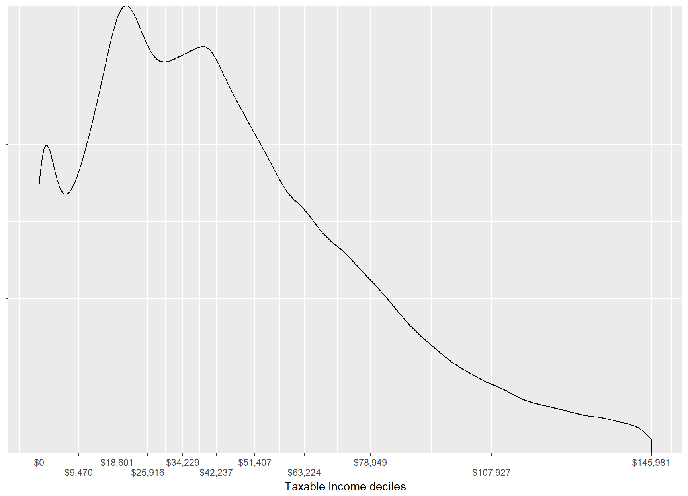
DF %>%
mutate(Taxable_Income_decile = cut(x,
breaks = quantile(sample_file$Taxable_Income,
probs = c(0:10)/10),
right = TRUE,
include.lowest = TRUE)) %>%
filter(between(x, -1, tx_inc_q(0.95) * 1.05)) %>%
{
ggplot(., aes(x = x, y = y)) +
geom_area(color = "black", size = 1.45) +
geom_area(aes(x = x, y = y,
group = Taxable_Income_decile,
fill = factor(Taxable_Income_decile),
color = factor(Taxable_Income_decile))) +
scale_color_viridis(discrete = TRUE) +
scale_fill_viridis(discrete = TRUE) +
scale_x_continuous("Taxable Income deciles",
labels = c(my_labs, grattan_dollar(tx_inc_q(0.95))),
expand = c(0,0),
# limits = c(-1, tx_inc_q(0.95)*1.05),
breaks = c(tx_inc_q((0:10)/10), tx_inc_q(0.95))) +
scale_y_continuous(expand = c(0,0), limits = c(0, max(.$y) * 1.05)) +
theme(legend.position = "none",
axis.line.y = element_blank(),
axis.text.y = element_blank(),
axis.title.y = element_blank())+
annotate("text",
x = tx_inc_q(0.925),
y = 2 * max(.$y[.$x > tx_inc_q(0.925)]),
size = 10/(14/5),
label = paste0("5% of taxpayers\nhad incomes\ngreater than\n", grattan_dollar(tx_inc_q(0.95))),
hjust = 0,
vjust = 0) +
annotate("segment",
arrow = arrow(type = "closed", length = unit(11, "pt"), angle = 20),
x = tx_inc_q(0.925),
y = 1.9 * max(.$y[.$x > tx_inc_q(0.925)]),
size = 1,
xend = tx_inc_q(0.95),
yend = 1.9 * max(.$y[.$x > tx_inc_q(0.925)]))
}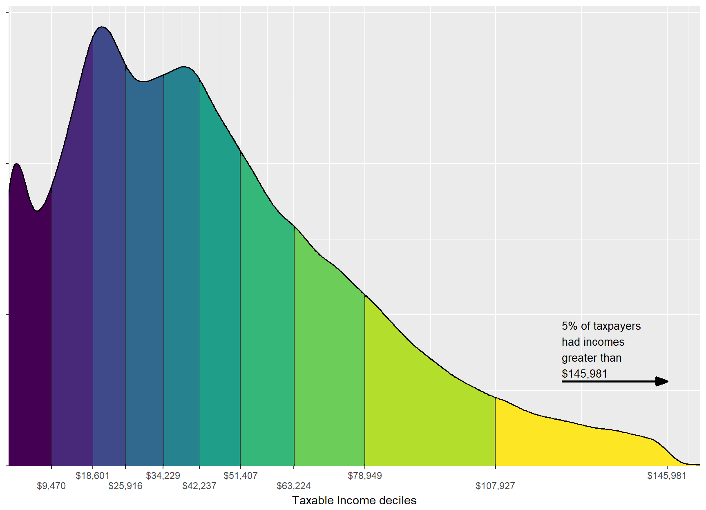
n_CGs <-
sample_file %>%
filter(Tot_CY_CG_amt > 0) %$%
sum(WEIGHT)
n_CGs_prev <-
sample_file_prev %>%
filter(Tot_CY_CG_amt > 0) %$%
sum(WEIGHT)
tot_CG_amt <-
sample_file %$%
sum(as.numeric(Tot_CY_CG_amt * WEIGHT))
tot_Net_CG_amt <-
sample_file %$%
sum(as.numeric(Net_CG_amt * WEIGHT))
tax_on_CG <-
sample_file %>%
filter(Net_CG_amt > 0) %>%
mutate(tax = income_tax(Taxable_Income, fy.year = FY.YEAR),
tax_wo_CG = income_tax(pmaxC(Taxable_Income - Net_CG_amt, 0), fy.year = FY.YEAR)) %>%
summarise(total = sum((tax - tax_wo_CG) * WEIGHT),
avg = mean(tax - tax_wo_CG))
tax_on_CG_prev <-
sample_file_prev %>%
filter(Net_CG_amt > 0) %>%
mutate(tax = income_tax(Taxable_Income, fy.year = FY.YEAR),
tax_wo_CG = income_tax(pmaxC(Taxable_Income - Net_CG_amt, 0), fy.year = FY.YEAR)) %>%
summarise(total = sum((tax - tax_wo_CG) * WEIGHT),
avg = mean(tax - tax_wo_CG))
latex_percent <- function(x) gsub("%", "\\%", percent(x), fixed = TRUE)The capital gains discount applies to assets sold after more than 12 months’ holding. There were 840,000 individuals who sold capital assets, up 8.84% from last year. The sale of their assets totalled $34.2~billion of which $12.9~billion comprised part of their taxable income.
The tax on these capital gains totalled $4.76~billion or $7,900 per individual with capital gains tax.
probCG_by_age <-
sample_file %>%
group_by(age_range_description) %>%
summarise(probCG = mean(Net_CG_amt > 0))
probCG_twenties <-
sample_file %>%
filter(age_imp < 30) %$%
mean(Net_CG_amt > 0)
probCG_65p <-
sample_file %>%
filter(age_imp >= 65) %$%
mean(Net_CG_amt > 0)
avg_marginal_rate_CG <-
sample_file %>%
filter(Net_CG_amt > 0) %>%
mutate(marginal_rate = income_tax(Taxable_Income + 1, fy.year = FY.YEAR) - income_tax(Taxable_Income, fy.year = FY.YEAR)) %$%
mean(marginal_rate)
avg_marginal_rate_CG_weighted_by_CG <-
sample_file %>%
filter(Net_CG_amt > 0) %>%
mutate(marginal_rate = income_tax(Taxable_Income + 1, fy.year = FY.YEAR) - income_tax(Taxable_Income, fy.year = FY.YEAR)) %$%
weighted.mean(marginal_rate, Net_CG_amt)
avg_marginal_rate_b4_CG <-
sample_file %>%
filter(Net_CG_amt > 0,
age_imp >= 20) %>%
mutate(Taxable_Income_b4_CG = pmaxC(Taxable_Income - Net_CG_amt, 0),
marginal_rate_b4_CG = income_tax(Taxable_Income_b4_CG + 1, fy.year = FY.YEAR) - income_tax(Taxable_Income_b4_CG, fy.year = FY.YEAR)) %>%
mutate(is_in_workforce = between(age_imp, 20, 65)) %>%
group_by(is_in_workforce) %>%
summarise(avg_marginal_rate_weighted = weighted.mean(marginal_rate_b4_CG, Net_CG_amt),
avg_marginal_Rate = mean(marginal_rate_b4_CG))
prop_no_CGT_discount <-
sample_file %>%
mutate(apparent_discount = 1 - Net_CG_amt / Tot_CY_CG_amt) %>%
filter(Tot_CY_CG_amt > 0) %$%
mean(apparent_discount == 0)
prop_100pc_CGT_discount <-
sample_file %>%
mutate(apparent_discount = 1 - Net_CG_amt / Tot_CY_CG_amt) %>%
filter(Tot_CY_CG_amt > 0) %$%
mean(apparent_discount == 1)
prop_50pc_CGT_discount <-
sample_file %>%
mutate(apparent_discount = 1 - Net_CG_amt / Tot_CY_CG_amt) %>%
filter(Tot_CY_CG_amt > 0) %$%
mean(between(apparent_discount, 0.45, 0.55))
prop_no_CGT_discount_by_val <-
sample_file %>%
mutate(apparent_discount = 1 - Net_CG_amt / Tot_CY_CG_amt) %>%
filter(Tot_CY_CG_amt > 0) %$%
weighted.mean(apparent_discount == 0, Tot_CY_CG_amt)
cgt_ratio_res <- 50sample_file %>%
select(Tot_CY_CG_amt, Net_CG_amt, WEIGHT) %>%
filter(Tot_CY_CG_amt > 0) %>%
mutate(apparent_discount = Net_CG_amt / Tot_CY_CG_amt) %>%
mutate(apparent_discount_round = round(apparent_discount * cgt_ratio_res) / cgt_ratio_res) %>%
group_by(apparent_discount_round) %>%
summarise(n_taxpayers = sum(WEIGHT),
n_taxpayers_by_val = sum(as.double(WEIGHT * Tot_CY_CG_amt))) %>%
ggplot(aes(x = apparent_discount_round, y = n_taxpayers_by_val)) +
xlab("Ratio of Net capital gains to Total capital gains") +
geom_bar(stat = "identity", width = 1/cgt_ratio_res) +
theme(axis.title.y = element_blank(),
axis.ticks.y = element_blank(),
axis.text.y = element_blank())
Taxable capital gains are typically realized later in life. This is unsurprising: a capital gain can only be realized when one has an asset to sell. Further, the capital gains tax makes the sale of assets less attractive when incomes are high. Taxpayers in their twenties have a 1.28% chance of incurring capital gains tax, whereas 11.8% of those of retirement age have capital gains. shows that although capital gains have been more common with older taxpayers, the age skew is slightly more pronounced in 2013-14 than in previous years.
The average marginal tax rate of those with capital gains tax was 29.1%; however, this weights an individual with a capital gain of $1 equally as someone with a capital gain of $500,000. Weighting by the value of capital gain, the average marginal tax rate was 40.6%.
The net capital gains includes the CGT discount (and other discounts) applied to: \[\text{Total capital gains} - \text{Total capital losses (incl. from prev. years)}\] Comparing the ratio of can shed some light on the value of the discount and the impact of capital losses on tax and tax revenue. Of those with nonzero total capital gains, 8.79% had no discount and 28.5% paid no tax (or a 100% discount). Some 45.3% had net capital gains of around 50% of their total gains. Weighting these numbers by the value of total capital gains, 1.51% of capital gains are taxed at the full marginal rate. shows the distribution of this ratio. The deviance from 50% is due to some gains being realized within 12 months and (more commonly) capital losses.
CG_descriptive_by_bracket <-
sample_file %>%
mutate(tax = income_tax(Taxable_Income, fy.year = FY.YEAR),
tax_wo_CG = income_tax(pmaxC(Taxable_Income - Net_CG_amt, 0), fy.year = FY.YEAR)) %>%
group_by(Tax_Bracket) %>%
summarise(n_taxpayers = sum(WEIGHT),
n_CG = sum(WEIGHT[Net_CG_amt > 0]),
val_CG = sum(as.double(Tot_CY_CG_amt * WEIGHT)),
total_CGT = sum(as.double((tax - tax_wo_CG) * WEIGHT))) %>%
ungroup %>%
arrange(Tax_Bracket) CG_descriptive_by_bracket %>%
# cosmetic
mutate(Taxpayers = comma(n_taxpayers),
`with CG` = comma(n_CG),
`Total cap. gains ($)` = grattan_dollar(val_CG),
`Total CGT ($)` = grattan_dollar(total_CGT)) %>%
select(`Tax bracket` = Tax_Bracket,
`Taxpayers`, `with CG`, `Total cap. gains ($)`, `Total CGT ($)`) %>%
kable(align = "rrrrrr") | Tax bracket | Taxpayers | with CG | Total cap. gains ($) | Total CGT ($) |
|---|---|---|---|---|
| $0-$18,200 | 2,512,650 | 84,000 | $2,503,663,250 | $0 |
| $18,201-$37,000 | 3,101,900 | 118,300 | $1,958,287,950 | $64,130,858 |
| 37,001-$80,000 | 4,808,650 | 185,600 | $4,696,316,500 | $413,550,412 |
| $80,001-$180,000 | 2,135,400 | 151,350 | $7,373,503,900 | $965,377,002 |
| $180,000+ | 380,100 | 61,150 | $17,649,661,600 | $3,314,621,140 |
sample_file %>%
ggplot(aes(x = age_imp, y = as.numeric(Net_CG_amt > 0))) +
geom_smooth(color = viridis(1), size = 1.2) +
scale_y_continuous(label = percent)
#> `geom_smooth()` using method = 'gam' and formula 'y ~ s(x, bs = "cs")'
sample_files_all %>%
select(age_range, Net_CG_amt, fy.year) %>%
merge(age_range_decoder, by = "age_range") %>%
group_by(age_range_description) %>%
mutate(min_age = if_else(grepl("to", age_range_description),
as.numeric(gsub("^([0-9]{2}).*$", "\\1", age_range_description)),
if_else(grepl("70", age_range_description),
70,
15)),
max_age = min_age + 5,
age_imp = runif(n(), min_age, max_age)) %>%
select(-min_age, -max_age) %>%
mutate(last_fy = fy.year == max(fy.year)) %>%
mutate(`Tax year` = factor(fy.year)) %>%
group_by(`Tax year`) %>%
mutate(label = if_else(age_imp == max(age_imp), fy.year, NA_character_),
is_CG = Net_CG_amt > 0,
label.y = mean(is_CG[age_imp > 71]),
Age = age_imp) %>%
{
ggplot(., aes(x = Age,
y = as.numeric(is_CG),
color = `Tax year`,
group = `Tax year`)) +
scale_y_continuous(label = percent) +
ggtitle("Incidence of capital gains") +
scale_color_viridis(discrete = TRUE) +
geom_line(stat = "smooth", method = "auto", se = FALSE, size = 1.2) +
geom_label_repel(aes(label = label, y = label.y),
fill = NA,
nudge_x = 1,
hjust = 0,
vjust = 0,
fontface = "bold",
na.rm = TRUE) +
annotate("blank",
x = 80, y = 0) +
theme_dark() +
theme(axis.title.y = element_blank())
}
#> Warning in if_else(grepl("to", age_range_description),
#> as.numeric(gsub("^([0-9]{2}).*$", : NAs introduced by coercion
#> Warning: Ignoring unknown aesthetics: x, y
#> `geom_smooth()` using method = 'gam' and formula 'y ~ s(x, bs = "cs")'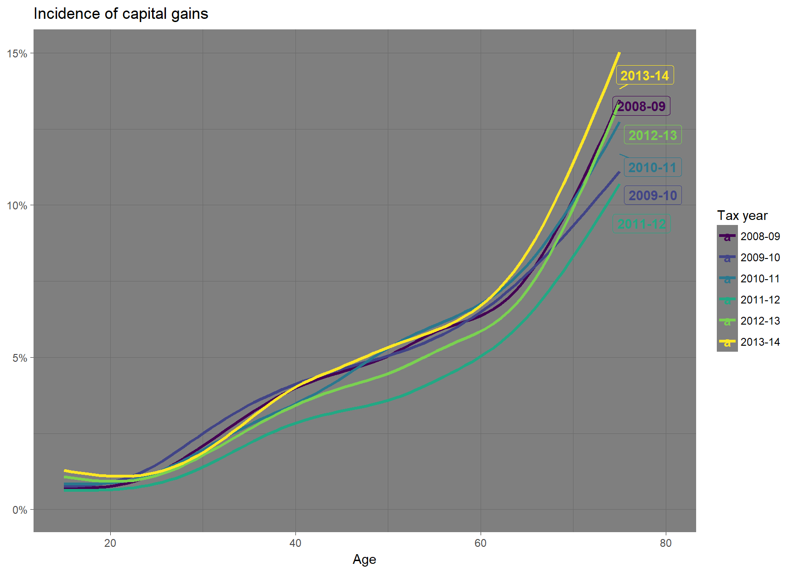
set.seed(24841)
sample_files_all %>%
select(age_range, Net_CG_amt, fy.year) %>%
merge(age_range_decoder, by = "age_range") %>%
group_by(age_range_description) %>%
mutate(min_age = ifelse(grepl("to", age_range_description),
as.numeric(gsub("^([0-9]{2}).*$", "\\1", age_range_description)),
ifelse(grepl("70", age_range_description),
70,
15)),
max_age = min_age + 5,
age_imp = runif(n(), min_age, max_age)) %>%
select(-min_age, -max_age) %>%
filter(Net_CG_amt > 0) %>%
mutate(Age = round(age_imp)) %>%
group_by(fy.year, Age) %>%
summarise(mean_Net_CG = mean(Net_CG_amt),
sd_Net_CG = sd(Net_CG_amt)) %>%
ungroup %>%
mutate(last_fy = fy.year == max(fy.year) | fy.year == max(fy.year[fy.year != max(fy.year)])) %>%
group_by(fy.year) %>%
mutate(label = ifelse(Age == max(Age), fy.year, NA_character_),
label.y = mean(mean_Net_CG[Age > 70])) %>%
{
ggplot(., aes(x = Age, y = mean_Net_CG, color = factor(fy.year), group = factor(fy.year))) +
scale_y_continuous(label = dollar) +
scale_color_viridis(discrete = TRUE) +
geom_line(stat = "smooth", method = "auto", se = FALSE, size = 1.2) +
scale_alpha_discrete(range = c(0.5, 1)) +
geom_text(aes(label = label, y = label.y, size = if_else(last_fy %in% c("2012-13", "2013-14"), 2, 1),
nudge_x = if_else(last_fy, 1, 0)),
hjust = 0,
vjust = 0,
fontface = "bold",
na.rm = TRUE) +
scale_x_continuous(expand = c(0,0)) +
theme_dark() +
annotate("blank",
x = 85, y = 0) +
theme(axis.title.y = element_blank(),
plot.margin = unit(c(0,0,5,0), "pt"))
}
#> Warning: Using alpha for a discrete variable is not advised.
#> Warning: Ignoring unknown aesthetics: nudge_x
#> Warning: Ignoring unknown aesthetics: x, y
#> `geom_smooth()` using method = 'loess' and formula 'NULL'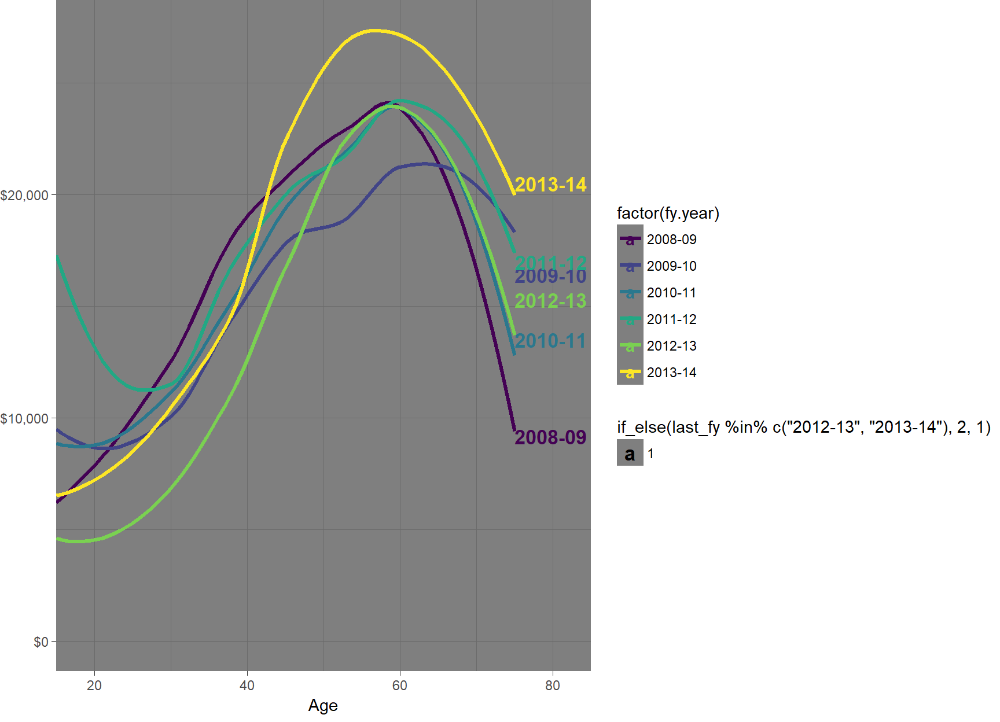
sample_file %>%
mutate(Tot_inc_amt_noCG = Tot_inc_amt - Net_CG_amt,
Taxable_Income_noCG = pmaxC(Tot_inc_amt_noCG - Tot_ded_amt - NPP_loss_claimed - PP_loss_claimed, 0)) %>%
mutate(Taxable_Income_noCG_decile = ntile(Taxable_Income_noCG, 10)) %>%
filter(Taxable_Income_noCG_decile %in% c(1, 5, 10)) %>%
filter(Net_CG_amt > 0) %>%
rename(Age = age_imp) %>%
mutate(`Taxable Income\n(excl CG) decile` = factor(Taxable_Income_noCG_decile)) %>%
ggplot(aes(x = Age, fill = `Taxable Income\n(excl CG) decile`)) +
geom_density(alpha = 0.7) +
theme(legend.position = "right")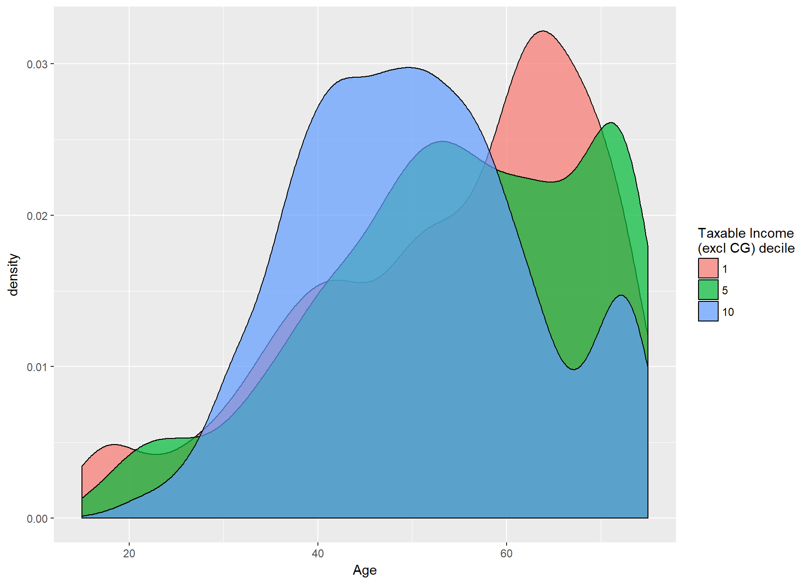
if (FY.YEAR != "2013-14"){
stop("Check annotations in this chart before compiling")
}
sample_file %>%
filter(Net_CG_amt > 0, age_imp > 20) %>%
mutate(marginal_rate = income_tax(Taxable_Income + 1, fy.year = FY.YEAR) - income_tax(Taxable_Income, fy.year = FY.YEAR)) %>%
rename(Age = age_imp) %>%
ggplot(aes(x = Age, y = marginal_rate)) +
scale_y_continuous(label = percent) +
geom_smooth(aes(weight = 1), colour = viridis(2)[1], size = 1.2) +
geom_smooth(aes(weight = Net_CG_amt), colour = viridis(2)[2], size = 1.2) +
annotate("text",
x = c(57, 57),
y = c(0.335, 0.435),
label = c("Unweighted", "Weighted by CG amt"),
colour = viridis(2),
fontface = "bold",
hjust = 0) +
theme(axis.title.y = element_blank())
#> `geom_smooth()` using method = 'gam' and formula 'y ~ s(x, bs = "cs")'
#> `geom_smooth()` using method = 'gam' and formula 'y ~ s(x, bs = "cs")'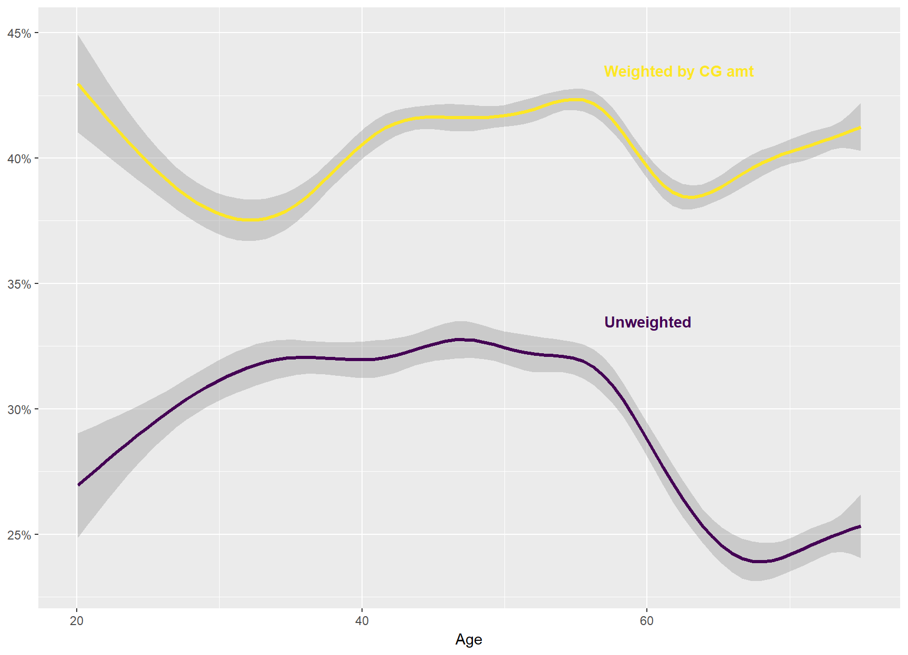
if (FY.YEAR != "2013-14"){
stop("Check annotations in this chart before compiling")
}
sample_file %>%
filter(Net_CG_amt > 0, age_imp > 20) %>%
mutate(Taxable_Income_b4_CG = pmaxC(Taxable_Income - Net_CG_amt, 0),
marginal_rate_b4_CG = income_tax(Taxable_Income_b4_CG + 1, fy.year = FY.YEAR) - income_tax(Taxable_Income_b4_CG, fy.year = FY.YEAR)) %>%
rename(Age = age_imp) %>%
ggplot(aes(x = Age, y = marginal_rate_b4_CG)) +
scale_y_continuous(label = percent) +
geom_smooth(aes(weight = 1), colour = viridis(2)[2], size = 1.2) +
geom_smooth(aes(weight = Net_CG_amt), colour = viridis(2)[1], size = 1.2) +
annotate("text",
x = c(31, 35),
y = c(0.315, 0.225),
label = c("Unweighted", "Weighted by CG amt"),
colour = viridis(2),
fontface = "bold",
hjust = 0) +
theme(axis.title.y = element_blank())
#> `geom_smooth()` using method = 'gam' and formula 'y ~ s(x, bs = "cs")'
#> `geom_smooth()` using method = 'gam' and formula 'y ~ s(x, bs = "cs")'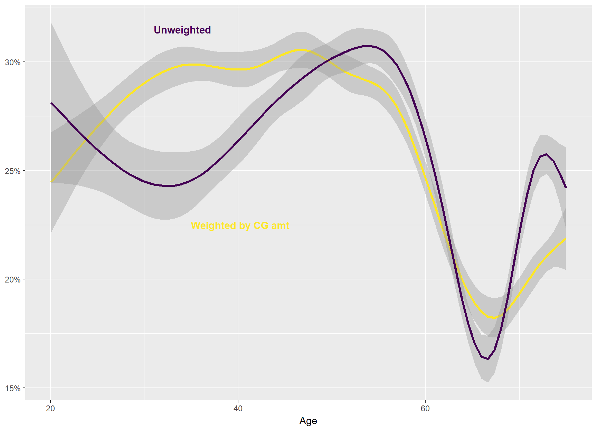
n_prop_invstrs <-
sample_file %$%
sum((Gross_rent_amt > 0) * WEIGHT)
n_NGs <-
sample_file %$%
sum((Net_rent_amt < 0) * WEIGHT)
val_NG_losses <-
sample_file %$%
sum(abs(pminC(Net_rent_amt, 0) * WEIGHT))
NG_tax_exp <-
sample_file %>%
mutate(tax = income_tax(Taxable_Income, fy.year = FY.YEAR),
new_tax = income_tax(Taxable_Income - pminC(Net_rent_amt, 0), fy.year = FY.YEAR),
diff = new_tax - tax) %$%
sum(diff * WEIGHT)There were 2~million property investors. Of these, 1.25~million were negative gearing. Losses claimed totaled $10.7~billion. This delivered a tax expenditure (by revenue foregone) of $3.63~billion.
sample_file %>%
filter(between(Sw_amt, 0, 250e3)) %>%
rename(Salary = Sw_amt) %>%
ggplot(aes(x = Salary, y = as.numeric(Net_rent_amt < 0))) +
geom_smooth(colour = viridis(2)[2], size = 1.5) +
scale_y_continuous(label = percent) +
scale_x_continuous(label = dollar) +
theme(axis.title.y = element_blank())
#> `geom_smooth()` using method = 'gam' and formula 'y ~ s(x, bs = "cs")'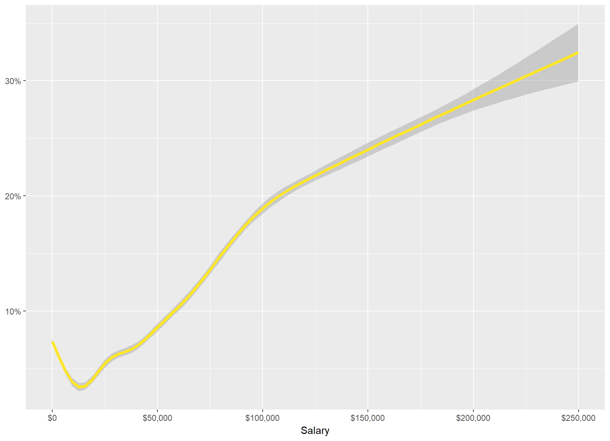
NG_by_taxBracket <-
sample_file %>%
mutate(Tax_bracket = cut(Taxable_Income,
breaks = c(-Inf, 18200, 37e3, 80e3, 180e3, Inf),
labels = c("$0-$18,200", "$18,201-$37,000",
"$37,001-$80,000", "$80,001-$180,000",
"Over $180,000"),
ordered_results = TRUE,
include.lowest = TRUE)) %>%
group_by(Tax_bracket) %>%
summarise(n_NG = wsum(Net_rent_amt < 0, WEIGHT),
n = sum(WEIGHT)) %>%
arrange(Tax_bracket)NG_by_taxBracket %>%
mutate(`Number negative gearing` = comma(n_NG),
`\\%` = percent(n_NG / n)) %>%
select(`Tax bracket` = Tax_bracket,
`Number negative gearing`,
`\\%`) %>%
kable(align = "rrr") | Tax bracket | Number negative gearing | % |
|---|---|---|
| $0-$18,200 | 161,800 | 6.4% |
| $18,201-$37,000 | 180,950 | 5.8% |
| $37,001-$80,000 | 469,500 | 9.8% |
| $80,001-$180,000 | 350,800 | 16.4% |
| Over $180,000 | 85,200 | 22.4% |
NG_by_taxBracket_tax_benefit <-
sample_file %>%
mutate(Tot_inc_amt_NoNG = Tot_inc_amt - Net_rent_amt + pmaxC(Net_rent_amt, 0),
Taxable_Income_noNG = pmaxC(Tot_inc_amt_NoNG - Tot_ded_amt - NPP_loss_claimed - PP_loss_claimed, 0),
tax_current = income_tax(Taxable_Income, fy.year = FY.YEAR),
tax_noNG = income_tax(Taxable_Income_noNG, fy.year = FY.YEAR),
change = tax_noNG - tax_current) %>%
mutate(Tax_bracket = cut(Taxable_Income,
breaks = c(-Inf, 18200, 37e3, 80e3, 180e3, Inf),
labels = c("$0-$18,200",
"$18,201-$37,000",
"$37,001-$80,000",
"$80,001-$180,000",
"Over $180,000"),
ordered_results = TRUE,
include.lowest = TRUE)) %>%
group_by(Tax_bracket) %>%
summarise(total_tax_change = sum(change * WEIGHT),
avg_tax_change = mean(change)) %>%
arrange(Tax_bracket)NG_by_taxBracket_tax_benefit %>%
mutate(`Total tax change` = grattan_dollar(total_tax_change),
`Average tax change` = grattan_dollar(avg_tax_change)) %>%
select(`Tax bracket` = Tax_bracket,
`Total tax change`,
`Average tax change`) %>%
kable(align = paste0(rep("r", ncol(.)), collapse = ""))| Tax bracket | Total tax change | Average tax change |
|---|---|---|
| $0-$18,200 | $97,261,913 | $39 |
| $18,201-$37,000 | $333,873,994 | $108 |
| $37,001-$80,000 | $1,246,976,877 | $259 |
| $80,001-$180,000 | $1,288,682,051 | $603 |
| Over $180,000 | $648,280,796 | $1,706 |
NG_by_taxable_income_decile <-
sample_file %>%
mutate(Taxable_Income_decile = ntile(Taxable_Income, 10)) %>%
group_by(Taxable_Income_decile) %>%
summarise(n_NG = wsum(Net_rent_amt < 0, WEIGHT),
n = sum(WEIGHT)) %>%
arrange(Taxable_Income_decile) NG_by_taxable_income_decile %>%
mutate(`Number negative gearing` = comma(n_NG),
`\\%` = percent(n_NG / n)) %>%
mutate(`Taxable Income decile` = factor(Taxable_Income_decile)) %>%
select(`Taxable Income decile`,
`Number negative gearing`,
`\\%`) %>%
kable(align = "rrrr") | Taxable Income decile | Number negative gearing | % |
|---|---|---|
| 1 | 109,550 | 8.5% |
| 2 | 55,750 | 4.3% |
| 3 | 64,950 | 5.0% |
| 4 | 82,400 | 6.4% |
| 5 | 93,700 | 7.2% |
| 6 | 106,600 | 8.2% |
| 7 | 130,750 | 10.1% |
| 8 | 157,950 | 12.2% |
| 9 | 192,600 | 14.9% |
| 10 | 254,000 | 19.6% |
NG_tax_benefit_taxable_income_decile <-
sample_file %>%
mutate(Tot_inc_amt_NoNG = Tot_inc_amt - Net_rent_amt + pmaxC(Net_rent_amt, 0),
Taxable_Income_noNG = pmaxC(Tot_inc_amt_NoNG - Tot_ded_amt - NPP_loss_claimed - PP_loss_claimed, 0),
tax_current = income_tax(Taxable_Income, fy.year = FY.YEAR),
tax_noNG = income_tax(Taxable_Income_noNG, fy.year = FY.YEAR),
change = tax_noNG - tax_current) %>%
mutate(Taxable_Income_decile = ntile(Taxable_Income, 10)) %>%
group_by(Taxable_Income_decile) %>%
summarise(tax_diff = sum(change * WEIGHT)) %>%
ungroup %>%
mutate(tax_diff_prop = tax_diff / sum(tax_diff)) %>%
arrange(Taxable_Income_decile) %>%
mutate(decile_by = "Taxable income")
NG_tax_benefit_taxable_income_decile_noNG <-
sample_file %>%
mutate(Tot_inc_amt_NoNG = Tot_inc_amt - Net_rent_amt + pmaxC(Net_rent_amt, 0),
Taxable_Income_noNG = pmaxC(Tot_inc_amt_NoNG - Tot_ded_amt - NPP_loss_claimed - PP_loss_claimed, 0),
tax_current = income_tax(Taxable_Income, fy.year = FY.YEAR),
tax_noNG = income_tax(Taxable_Income_noNG, fy.year = FY.YEAR),
change = tax_noNG - tax_current) %>%
mutate(Taxable_Income_decile = ntile(Taxable_Income_noNG, 10)) %>%
group_by(Taxable_Income_decile) %>%
summarise(tax_diff = sum(change * WEIGHT)) %>%
ungroup %>%
mutate(tax_diff_prop = tax_diff / sum(tax_diff)) %>%
arrange(Taxable_Income_decile) %>%
mutate(decile_by = "Taxable income before NG")
bind_rows("Current" = NG_tax_benefit_taxable_income_decile,
"Before NG" = NG_tax_benefit_taxable_income_decile_noNG) %>%
mutate(`Taxable income decile` = factor(Taxable_Income_decile)) %>%
ggplot(aes(x = `Taxable income decile`, y = tax_diff_prop, fill = decile_by)) +
geom_bar(stat = "identity") +
facet_grid(~decile_by) +
scale_y_continuous(label = percent,
expand = c(0,0),
limits = c(0, round(max(c(NG_tax_benefit_taxable_income_decile_noNG$tax_diff_prop,
NG_tax_benefit_taxable_income_decile$tax_diff_prop)), 1)))
NG_tax_benefit_taxable_income_decile_prev <-
sample_file_prev %>%
mutate(Tot_inc_amt_NoNG = Tot_inc_amt - Net_rent_amt + pmaxC(Net_rent_amt, 0),
Taxable_Income_noNG = pmaxC(Tot_inc_amt_NoNG - Tot_ded_amt - NPP_loss_claimed - PP_loss_claimed, 0),
tax_current = income_tax(Taxable_Income, fy.year = FY.YEAR),
tax_noNG = income_tax(Taxable_Income_noNG, fy.year = FY.YEAR),
change = tax_noNG - tax_current) %>%
mutate(Taxable_Income_decile = ntile(Taxable_Income, 10)) %>%
group_by(Taxable_Income_decile) %>%
summarise(tax_diff = sum(change * WEIGHT)) %>%
ungroup %>%
mutate(tax_diff_prop = tax_diff / sum(tax_diff)) %>%
arrange(Taxable_Income_decile) %>%
mutate(decile_by = "Taxable income")
NG_tax_benefit_taxable_income_decile_noNG_prev <-
sample_file_prev %>%
mutate(Tot_inc_amt_NoNG = Tot_inc_amt - Net_rent_amt + pmaxC(Net_rent_amt, 0),
Taxable_Income_noNG = pmaxC(Tot_inc_amt_NoNG - Tot_ded_amt - NPP_loss_claimed - PP_loss_claimed, 0),
tax_current = income_tax(Taxable_Income, fy.year = FY.YEAR),
tax_noNG = income_tax(Taxable_Income_noNG, fy.year = FY.YEAR),
change = tax_noNG - tax_current) %>%
mutate(Taxable_Income_decile = ntile(Taxable_Income, 10)) %>%
group_by(Taxable_Income_decile) %>% summarise(tax_diff = sum(change * WEIGHT)) %>%
ungroup %>%
mutate(tax_diff_prop = tax_diff / sum(tax_diff)) %>%
arrange(Taxable_Income_decile) %>%
mutate(decile_by = "Taxable income before NG")
bind_rows("Current" = NG_tax_benefit_taxable_income_decile,
"Before NG" = NG_tax_benefit_taxable_income_decile_noNG,
"Current (prev fy)" = NG_tax_benefit_taxable_income_decile_prev,
"Before NG (prev fy)" = NG_tax_benefit_taxable_income_decile_noNG_prev,
.id = "df_id") %>%
mutate(`Taxable income decile` = factor(Taxable_Income_decile)) %>%
mutate(financial_year = ifelse(grepl("prev fy", df_id), PREV.FY.YEAR, FY.YEAR)) %>%
ggplot(aes(x = `Taxable income decile`, y = tax_diff_prop, fill = financial_year)) +
geom_bar(stat = "identity", position = "dodge") +
scale_fill_viridis(discrete = TRUE, begin = 0, end = 0.3333) +
facet_grid(~decile_by) +
scale_y_continuous(label = percent,
expand = c(0,0),
limits = c(0, round(max(c(NG_tax_benefit_taxable_income_decile_noNG$tax_diff_prop,
NG_tax_benefit_taxable_income_decile$tax_diff_prop)), 1))) +
theme(legend.margin = unit(0, "lines"),
legend.title = element_blank(),
legend.position = c(0.00, 1.025),
legend.background = element_blank(),
legend.justification = c(0, 1),
axis.title.y = element_blank(),
strip.background = element_rect(color = grey(0.8), fill = grey(0.8)),
strip.text = element_text(colour = "white", face = "bold"))
#> Warning: `legend.margin` must be specified using `margin()`. For the old
#> behavior use legend.spacing
p <-
ggplot(NULL) +
geom_smooth(data = sample_file,
aes(x = age_imp, y = as.numeric(Net_rent_amt < 0)),
colour = viridis(2)[1],
size = 1.2) +
geom_smooth(data = filter(sample_file, Gross_rent_amt > 0),
aes(x = age_imp,
y = as.numeric(Net_rent_amt < 0)),
colour = viridis(2)[2],
size = 1.2) +
scale_y_continuous(label = percent) +
xlab("Age") +
coord_cartesian(ylim = c(0,1)) +
theme(axis.title.y = element_blank())
if (FY.YEAR == "2013-14"){
p <-
p +
annotate("text",
x = c(38, 38),
y = c(0.18, y = 0.80),
label = c("All taxpayers", "Property investors"),
hjust = c(0.5, 0),
colour = viridis(2),
fontface = "bold")
} else {
p <- p +
theme(legend.position = "right")
}
p
#> `geom_smooth()` using method = 'gam' and formula 'y ~ s(x, bs = "cs")'
#> `geom_smooth()` using method = 'gam' and formula 'y ~ s(x, bs = "cs")'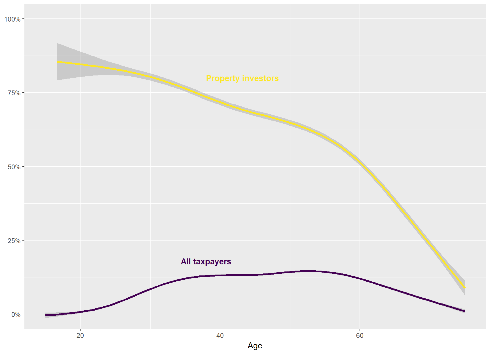
age_res = 1
inc_res = 10000
sample_file %>%
mutate(Tot_inc_amt_NoNG = Tot_inc_amt - Net_rent_amt + pmaxC(Net_rent_amt, 0),
Taxable_Income_noNG = pmaxC(Tot_inc_amt_NoNG - Tot_ded_amt - NPP_loss_claimed - PP_loss_claimed, 0),
tax_current = income_tax(Taxable_Income, fy.year = FY.YEAR),
tax_noNG = income_tax(Taxable_Income_noNG, fy.year = FY.YEAR),
change = tax_noNG - tax_current) %>%
# This excludes income losses (barely any anyway)
# and high income earners
filter(between(Tot_inc_amt_NoNG,
0,
upper_ylim <<- quantile(.$Tot_inc_amt_NoNG[.$Tot_inc_amt_NoNG > 0], probs = 0.95))) %>%
mutate(Age = age_res * round(age_imp / age_res),
`Total Income (before NG)` = inc_res * round(Tot_inc_amt_NoNG / inc_res)) %>%
group_by(Age, `Total Income (before NG)`) %>%
summarise(n_NG = sum((Net_rent_amt < 0) * WEIGHT),
prop_NG = mean(Net_rent_amt < 0),
tot_tax_benefit = sum(change * WEIGHT),
avg_tax_benefit = mean(change)) %>% ungroup %>%
ggplot(aes(x = Age, y = `Total Income (before NG)`, fill = prop_NG)) +
geom_bin2d(stat = "identity") +
scale_fill_viridis("% NG", labels = percent) +
scale_y_continuous(expand = c(0,0), label = grattan_dollar) +
scale_x_continuous(expand = c(0,0)) +
theme_dark() +
theme(legend.title = element_blank(),
plot.margin = unit(c(0,0,0,0), "pt"))# %>%
#align_baptiste(.)age_res = 1
inc_res = 10000
sample_file %>%
mutate(Tot_inc_amt_NoNG = Tot_inc_amt - Net_rent_amt + pmaxC(Net_rent_amt, 0),
Taxable_Income_noNG = pmaxC(Tot_inc_amt_NoNG - Tot_ded_amt - NPP_loss_claimed - PP_loss_claimed, 0),
tax_current = income_tax(Taxable_Income, fy.year = FY.YEAR),
tax_noNG = income_tax(Taxable_Income_noNG, fy.year = FY.YEAR),
change = tax_noNG - tax_current) %>%
# This excludes income losses (barely any anyway)
# and high income earners
filter(between(Tot_inc_amt_NoNG,
0,
upper_ylim <<- quantile(.$Tot_inc_amt_NoNG[.$Tot_inc_amt_NoNG > 0], probs = 0.95))) %>%
mutate(Age = age_res * round(age_imp / age_res),
`Total Income (before NG)` = inc_res * round(Tot_inc_amt_NoNG / inc_res)) %>%
group_by(Age, `Total Income (before NG)`) %>%
summarise(n_NG = sum((Net_rent_amt < 0) * WEIGHT),
prop_NG = mean(Net_rent_amt < 0),
tot_tax_benefit = sum(change * WEIGHT),
avg_tax_benefit = mean(change)) %>% ungroup %>%
ggplot(aes(x = Age, y = `Total Income (before NG)`, fill = avg_tax_benefit)) +
geom_bin2d(stat = "identity") +
scale_fill_viridis("Tax benefit", labels = grattan_dollar) +
scale_y_continuous(expand = c(0,0), label = grattan_dollar) +
scale_x_continuous(expand = c(0,0)) +
theme_dark() +
theme(legend.title = element_blank())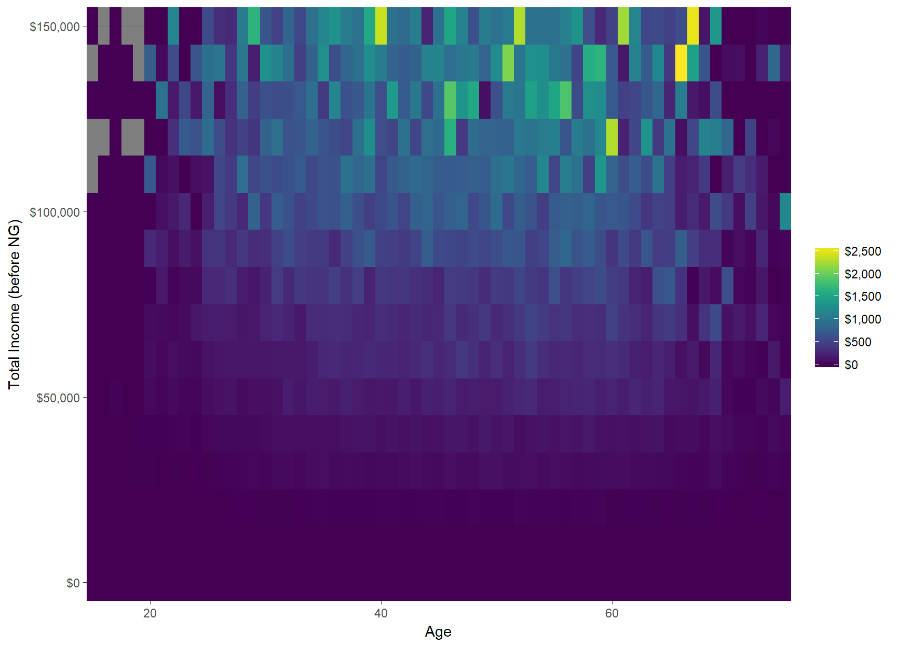
Differential uprating
Since the most recent versions of data detailing population income and wealth (as is contained within the ATO’s sample files) is typically years out-of-date on release, even understanding the present requires a forecast. Since most variables relating to income increase due to inflation – so any sensible forecast will increase the values relative to the past – this procedure is often called uprating.
Basic uprating
The most basic uprate method is the identity function, where the variables are not changed.
Alternatively, the variables can be increased by a long-term inflation rate. Even better, we can use the relevant time series indices for the variables and inflate using that index. For instance, salary and wage variables can be increased by the observed increase in the wage price index amd growth in the population of taxpayers by the labour force index.
Differential uprating
Basic uprating suffers some limitations. There are significant structural differences in how much individuals’ incomes grow. High-income individuals tend to have higher than average wage growth. Low-income individuals also have higher than average wage growth. That is, the pattern of wage growth by wage is U-shaped.
wage_r_by_fy <-
data.table(fy.year = yr2fy(2005:2014)) %>%
mutate(lag_fy = yr2fy(2004:2013)) %>%
mutate(wage_growth_r = wage_inflator(from_fy = lag_fy, to_fy = fy.year) - 1)average_salary_by_fy_swtile <-
sample_files_all %>%
select(fy.year, Sw_amt) %>%
filter(Sw_amt > 0) %>%
group_by(fy.year) %>%
mutate(`Salary percentile` = ntile(Sw_amt, 100)) %>%
ungroup %>%
group_by(fy.year, `Salary percentile`) %>%
summarise(average_salary = mean(Sw_amt)) %>%
ungroup %>%
arrange(`Salary percentile`, fy.year) %>%
group_by(`Salary percentile`) %>%
mutate(r_average_salary = average_salary / lag(average_salary) - 1) %>%
filter(fy.year != min(fy.year))
{
p <-
average_salary_by_fy_swtile %>% # NA
ungroup %>%
merge(wage_r_by_fy, by = "fy.year") %>%
mutate(`Basic wage inflator` = "Basic wage inflator") %>%
ggplot() +
geom_area(aes(x = `Salary percentile`, y = r_average_salary, group = fy.year, fill = fy.year),
se = FALSE, stat = "smooth", method = "loess") +
theme_bw() +
theme(legend.position = "right", plot.background = element_blank()) +
geom_line(aes(x = `Salary percentile`, y = wage_growth_r, group = `Basic wage inflator`, color = `Basic wage inflator`),
size = 1.125) +
scale_color_manual(values = "black") +
scale_y_continuous(name = "Salary rate of increase", label = percent) +
facet_wrap(~fy.year, ncol = 5) +
guides(fill = FALSE) +
theme(legend.position = c(0, 1),
legend.title = element_blank(),
legend.key = element_blank(),
legend.justification = c(0, 1))
# ggplotly(p)
p
}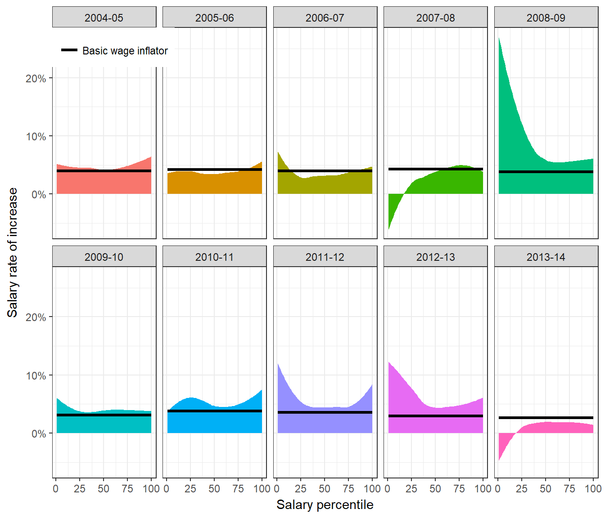
differential_uprates <-
average_salary_by_fy_swtile %>%
group_by(`Salary percentile`) %>%
summarise(avg_r = mean(r_average_salary)) %>%
mutate(avg_r_normed = avg_r / mean(avg_r))
differential_uprates %>%
ggplot(aes(x = `Salary percentile`, y = avg_r)) +
geom_line() +
scale_y_continuous(label = percent)
Differential uprating is a method by which variables are uprated by a function of not only the time period and the type of variable, but of the variable’s value too. To differentially uprate salary, use differentially_uprate_wage:
data_frame(wage = c(20e3, 50e3, 100e3)) %>%
mutate(ordinary = wage_inflator(wage, from_fy = "2012-13", to_fy = "2013-14"),
`change ordinary` = ordinary / wage - 1,
differential = differentially_uprate_wage(wage, from_fy = "2012-13", to_fy = "2013-14"),
`change differential` = differential / wage - 1
) %>%
mutate(wage = dollar(wage),
ordinary = dollar(ordinary),
differential = dollar(differential),
`change ordinary` = percent(`change ordinary`),
`change differential` = percent(`change differential`)) %>%
kable(align = rep("r", ncol(.)))| wage | ordinary | change ordinary | differential | change differential |
|---|---|---|---|---|
| $20,000 | $20,519 | 2.59% | $20,572 | 2.858% |
| $50,000 | $51,296 | 2.59% | $51,116 | 2.233% |
| $100,000 | $102,593 | 2.59% | $102,655 | 2.655% |
Note that differentially_update_wage uses the 2003-04 to 2013-14 sample files to generate estimates of the shape of the U. So applying the function to any other vector may have surprising results. In particular, the distribution of the vector provided is not considered. Furthermore, the from_fy must be in the range 2003-04 to 2013-14.
Modelling superannuation changes
Introduction
Australia’s superannuation system offers a number of tax breaks. Relative to most methods of savings, less tax is paid on money contributed to a super fund, and less tax is paid on the earnings. The functions described here attempt to model changes to tax breaks on money contributed to a super fund.
Modelling
The basic functions
The two tax methods modelled are Superannuation contributions tax concessions and Division 293 tax. The two main outputs are: the extra tax payable by a particular individual (and the symmetric extra revenue), and the number of individuals affected.
To obtain these results (say for 2017-18)
library(grattan)
library(data.table)
if (requireNamespace("taxstats", quietly = TRUE)){
library(taxstats)
sample_files_all <- get_sample_files_all()
} else {
templib <- tempfile()
hutils::provide.dir(templib)
install.packages("taxstats",
lib = templib,
repos = "https://hughparsonage.github.io/drat/",
type = "source")
library("taxstats", lib.loc = templib)
sample_files_all <- get_sample_files_all()
}
library(magrittr)
#' dollar scales
#'
#' @name grattan_dollar
#' @param x A numeric vector
#' @param digits Minimum number of digits after the decimal point. (\code{nsmall} in \code{base::format}).
#' @details Makes negative numbers appear as \eqn{-\$10,000} instead of \eqn{\$-10,000} in \code{scales::dollar}.
#' @export
# from scales
grattan_dollar <- function (x, digits = 0) {
#
nsmall <- digits
commaz <- format(abs(x), nsmall = nsmall, trim = TRUE, big.mark = ",",
scientific = FALSE, digits = 1L)
hutils::if_else(x < 0,
paste0("\U2212","$", commaz),
paste0("$", commaz))
}
(new_revenue <-
sample_file_1314 %>%
project_to(to_fy = "2017-18") %>%
as.data.table %>%
revenue_from_new_cap_and_div293(new_cap = 25e3, fy.year = "2016-17", new_age_based_cap = FALSE, new_div293_threshold = 250e3))
#> [1] 1199407221
paste(grattan_dollar(new_revenue / 1e9), "bn")
#> [1] "$1 bn"
(n_affected <-
sample_file_1314 %>%
project_to(to_fy = "2017-18") %>%
as.data.table %>%
n_affected_from_new_cap_and_div293(new_cap = 25e3, fy.year = "2016-17", new_age_based_cap = FALSE, new_div293_threshold = 250e3))
#> [1] 558767.4
prettyNum(round(n_affected), big.mark = ",")
#> [1] "558,767"Notes:
-
fy.yearrefers to the year the function takes the tax scales from, not the forecast year. Because we don’t have tax scales for 2017-18 yet, we model using the most recent (2017-18). - The functions require their inputs to be
data.tables. Sorry if you don’t likedata.tables. - You must use
sample_file_1314(because they have superannuation contributions variables).
Distributional analysis
By taxable income decile
Let’s create an object for sample_file_1718 avoid recreating it every time:
sample_file_1718 <-
sample_file_1314 %>%
project_to(to_fy = "2017-18") %>%
as.data.tableThe functions mentioned earlier return single values. In contrast, model_new_caps_and_div293 returns the sample file with extra variables, which can then be analyzed as a standard sample file. The variables of note are prv_revenue which is the tax payable under the old system, and new_revenue which is the tax payable under the proposed system. Thus:
new_sample_file_1718 <-
sample_file_1718 %>%
model_new_caps_and_div293(new_cap = 25e3, fy.year = "2016-17", new_age_based_cap = FALSE, new_div293_threshold = 250e3)library(knitr)
library(dplyr)
library(dtplyr) # for data.table
new_sample_file_1718 %>%
mutate(Taxable_Income_decile = ntile(Taxable_Income, 10)) %>%
group_by(Taxable_Income_decile) %>%
summarise(`Average increase in tax` = round(mean(new_revenue - prv_revenue), 2)) %>%
arrange(Taxable_Income_decile) %>%
kable| Taxable_Income_decile | Average increase in tax |
|---|---|
| 1 | 1.67 |
| 2 | 4.90 |
| 3 | 11.32 |
| 4 | 22.70 |
| 5 | 31.14 |
| 6 | 33.84 |
| 7 | 41.58 |
| 8 | 61.37 |
| 9 | 101.53 |
| 10 | 506.51 |
library(ggplot2)
new_sample_file_1718 %>%
mutate(Taxable_Income_decile = ntile(Taxable_Income, 10)) %>%
group_by(Taxable_Income_decile) %>%
summarise(`Average increase in tax` = mean(new_revenue - prv_revenue)) %>%
arrange(Taxable_Income_decile) %>%
#
mutate(`Taxable income decile` = factor(Taxable_Income_decile)) %>%
ggplot(aes(x = `Taxable income decile`, y = `Average increase in tax`)) +
geom_bar(stat = "identity") +
# cosmetic:
scale_y_continuous(label = grattan_dollar) +
theme(axis.title.y = element_text(face = "bold", angle = 90, margin = margin(1, 1, 1, 1, "lines")))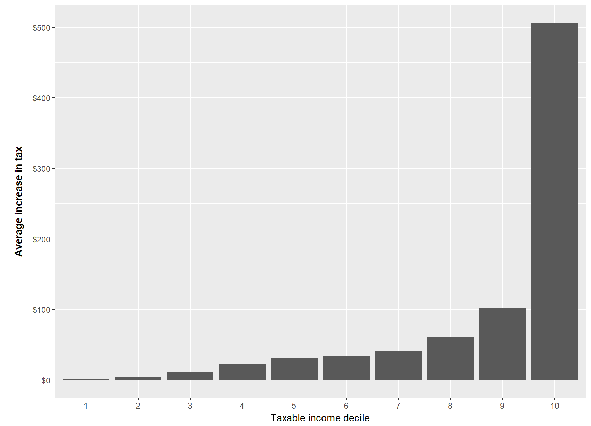
Performance of project
To test the performance of our projection, we consider the projection of the 2012-13 sample file by one year with the actual 2013-14 sample file.
sample_file_1314_projected <-
sample_file_1213 %>%
copy %>%
mutate(WEIGHT = 50) %>%
project(h = 1L,
fy.year.of.sample.file = "2012-13",
.recalculate.inflators = TRUE) %>%
.[]data.table(the_source = c("Actual",
"Projected"),
n_persons = c(nrow(sample_file_1314) * 50,
sum(sample_file_1314_projected$WEIGHT)),
avg_Taxable_Income = c(mean(sample_file_1314$Taxable_Income),
mean(sample_file_1314_projected$Taxable_Income)),
avg_Sw = c(mean(sample_file_1314$Sw_amt),
mean(sample_file_1314_projected$Sw_amt))
) %>%
melt.data.table(id.vars = "the_source") %>%
group_by(variable) %>%
mutate(value_rel = value / first(value)) %>%
# dcast.data.table(variable ~ the_source) %>%
ggplot(aes(x = variable, y = value_rel, fill = the_source)) +
geom_bar(stat = "identity", position = "dodge") +
geom_text(aes(label = comma(round(value))),
position = position_dodge(width = 0.9),
hjust = 1.02) +
coord_flip() +
theme(legend.position = "top")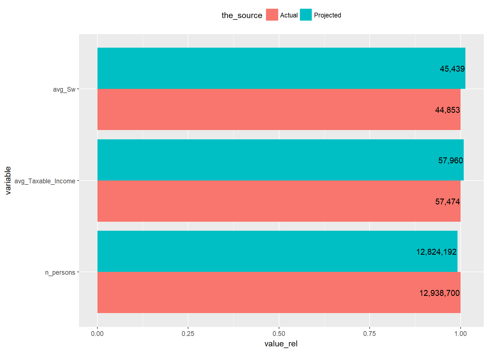
conf_int_of_t.test <- function(variable){
t_test <- t.test(sample_file_1314[[variable]],
sample_file_1314_projected[[variable]])
data.table(var = variable,
conf.low = t_test$conf.int[1],
conf.high = t_test$conf.int[2],
p.value = t_test$p.value)
}
c("Sw_amt",
"Net_rent_amt",
"Net_CG_amt",
"Tot_inc_amt",
"Tot_ded_amt",
"Taxable_Income") %>%
lapply(conf_int_of_t.test) %>%
rbindlist %>%
.[, list(var, conf.low, conf.high, p.value)] %>%
ggplot(aes(x = var,
ymin = conf.low,
ymax = conf.high,
color = p.value > 0.05)) +
geom_errorbar() +
geom_hline(yintercept = 0)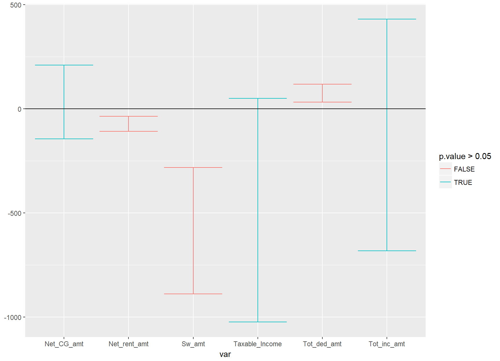